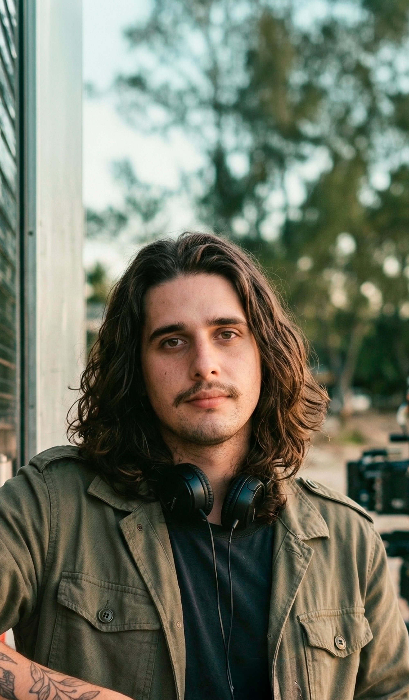

Drama / Fantasia · Brasil · 2026
Sinopse
Num futuro próximo, em uma vila quase deserta à beira-mar, uma família sobrevive da pesca, do artesanato e de uma persistente ânsia de viver. Entre silêncios e conflitos cotidianos, uma luz vibrante surge no horizonte, vinda do outro lado do mar aberto, como se tentasse lhes dizer algo.
Trailer
Stills


Nota da Direção
O mar não é apenas paisagem — ele pede alguma coisa. Não Alimente os Cães nasce desse incômodo e do desejo de filmar a família como um território de tensões, cuidado e sobrevivência.
As personagens não têm nomes porque o interesse está nos papéis que muitas pessoas já habitaram: o pai que sustenta, a mãe que sustenta os vínculos, os filhos que tentam existir à sua própria maneira. A luz que surge do mar não busca explicação — busca deslocamento. Ela provoca escuta, dúvida, movimento.
O filme se interessa pelos gestos, pelos silêncios e pelas ausências. Pelo que fica no corpo de quem assiste como uma pergunta aberta.
— Vini Poffo
Direção
VINI
POFFO

Vini Poffo é cineasta, diretora criativa e artista. Seu trabalho transita entre cinema e videoclipes, com uma abordagem artesanal, simbólica e política, criando imagens atravessadas por afeto, memória e território. Foi premiada pela Funarte no Prêmio RespirArte e soma mais de sete prêmios em festivais, incluindo Direção Revelação e Melhor Filme. Seus filmes já foram exibidos em mais de 60 festivais no Brasil e no exterior. Entre os destaques estão os curtas No Reflexo do Meu Nome e (Sub)urbana. No campo do videoclipe, teve trabalhos selecionados no Music Video Festival e premiados como Melhor Videoclipe no Festival de Cinema de Brasília. Em 2026, lança seu mais recente filme, Não Alimente os Cães.
Pôsteres


Elenco
Filha
Anna Luiza Maciel
Pai
Leonardo Goulart
Filho
Lucas Bomfim
Mãe
Saravy
Equipe Técnica
DireçãoVini Poffo
RoteiroEgon Zek
Assistência de DireçãoHeloísa Mazzuchetti e Jessé Rodrigues
Direção de FotografiaJaqueline Kogus e Isa Lanave
1º Assistente de CâmeraNica Chaves
Direção de ArteMatheus De Luca
FigurinoAna Hiera
Maquiagem e CabeloSui Domingues e Dani Machado
Diretora de ElencoMar Dias Rosa
Foto StillMaria Eduarda Fernandes
Direção de SomGabu Mota
Trilha SonoraYma
MixagemGabu Mota
Montagem e FinalizaçãoNatália Farias
Assistente de EdiçãoLucas Richard
VFX e CorDiego Lomac
Produção ExecutivaLuana Skibinski
Direção de ProduçãoTati Tanaka
DesignMapê Santos
AcessibilidadeNúbia Amorim
Making OfAnita Poffo
Ficha Técnica
Título
Não Alimente os Cães
Duração
24 min
Formato
DCP & ProRes
Proporção
1.85:1
Idioma Original
Português Brasileiro
Legendas
PT, EN, ES
País
Brasil
Classificação
12 anos
Contato & Imprensa
projetos@vinipoffo.com